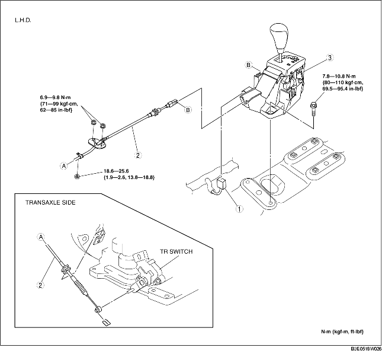
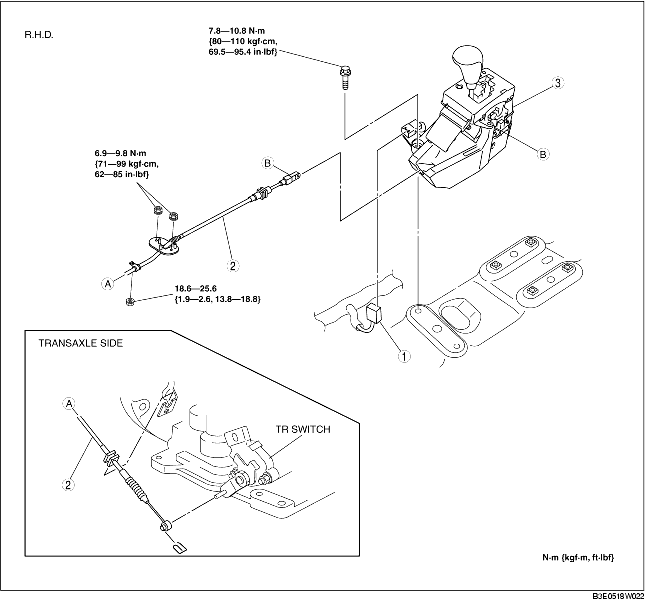

1. Remove the battery cover. (See BATTERY REMOVAL/INSTALLATION [ZJ, Z6].) (See BATTERY REMOVAL/INSTALLATION [LF].)
2. Disconnect the negative battery cable.
3. Remove the battery, battery box and battery tray. (See BATTERY REMOVAL/INSTALLATION [ZJ, Z6].) (See BATTERY REMOVAL/INSTALLATION [LF].)
4. Remove the air cleaner component. (See INTAKE-AIR SYSTEM REMOVAL/INSTALLATION [ZJ, Z6].) (See INTAKE-AIR SYSTEM REMOVAL/INSTALLATION [LF].)
5. Remove the console. (See CONSOLE REMOVAL/INSTALLATION.)
6. Remove the heat insulator. (front and center)
7. Remove in the order indicated in the table.
8. Install in the reverse order of removal.


.
|
1
|
Selector lever component connector
|
|
2
|
Selector cable
(See Selector Cable Removal Note.)
|
|
3
|
Selector lever component
|
1. Remove the clip.
2. Remove the selector cable.
1. Insert the locator pin of selector lever component to the hole of floor.
2. Tighten the selector lever component installation bolts.
1. Install the selector cable to the selector lever securely.
2. Install the selector cable to the bracket securely.
3. Verify that the selector lever is in the P position.
4. Lock the lock piece and safety lock of the selector cable (selector lever side) in the order as shown in the figure.
5. Verify that the manual shaft is in the P position.
6. Install the clip as shown in the figure.
7. Install the selector cable to the manual shaft lever in such a way that the selector cable does not bear a load.
8. Confirm that the end of the manual shaft lever sticks out of the end of the selector cable.
9. Install the selector cable to the selector cable bracket securely.